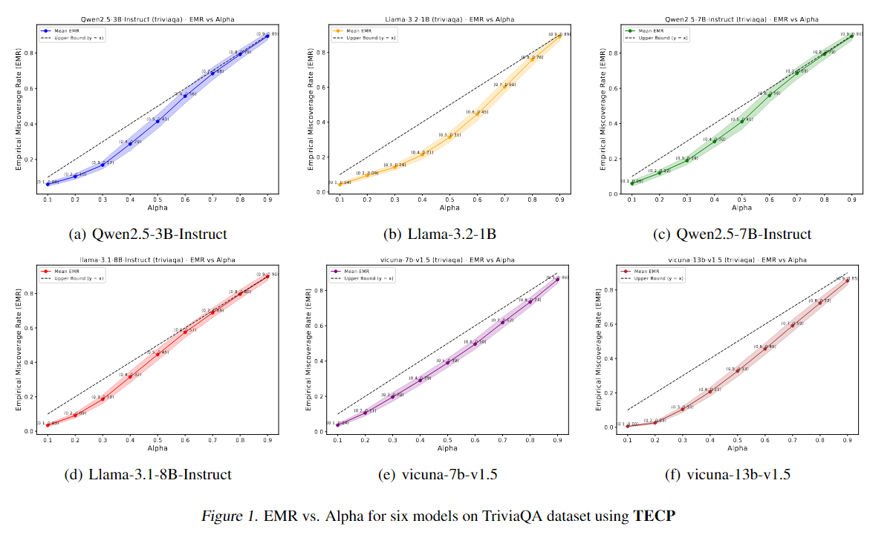
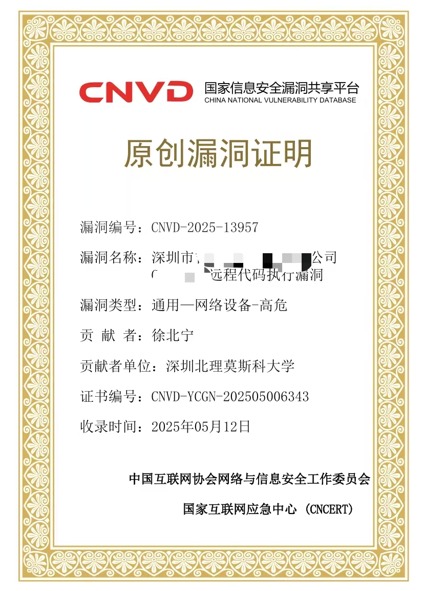
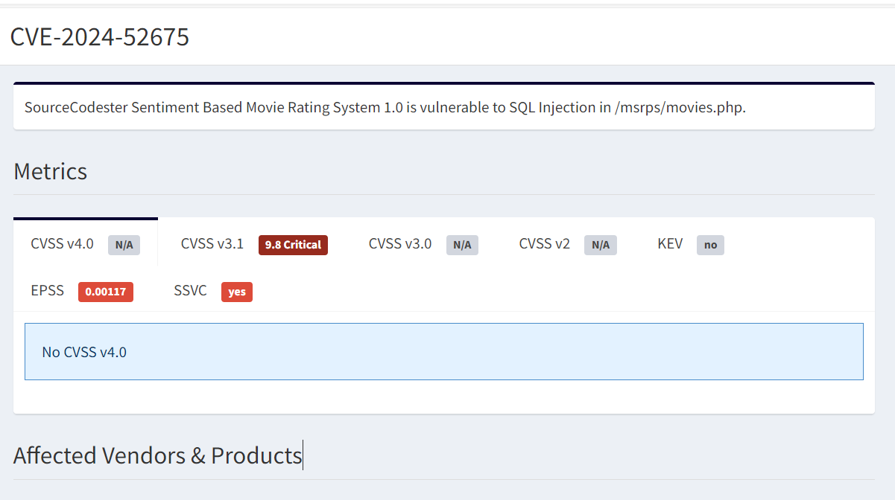
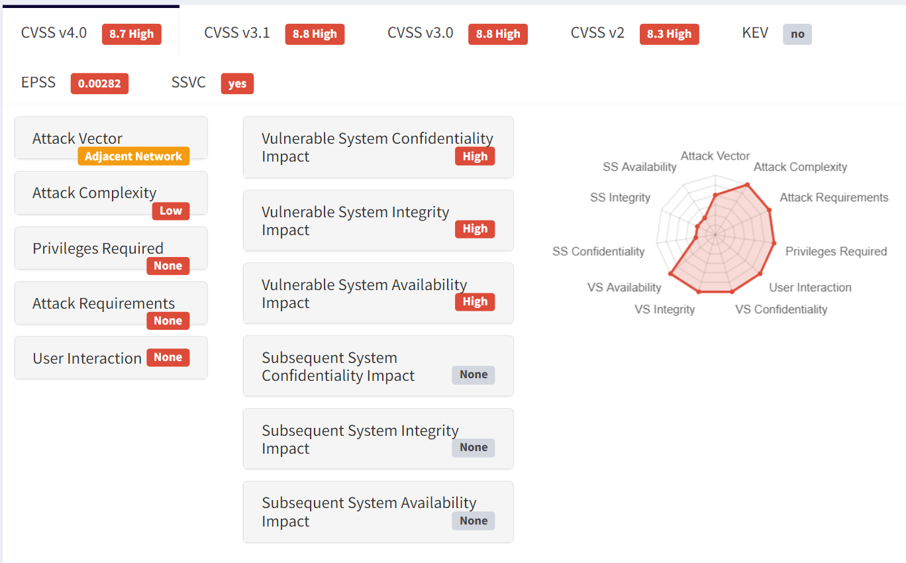
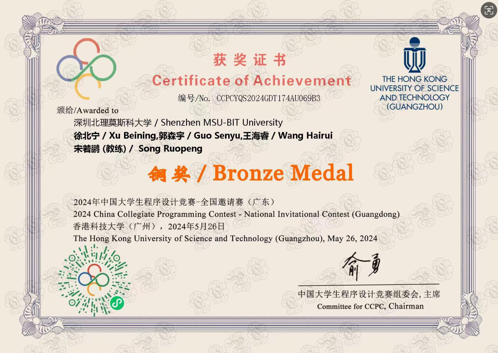
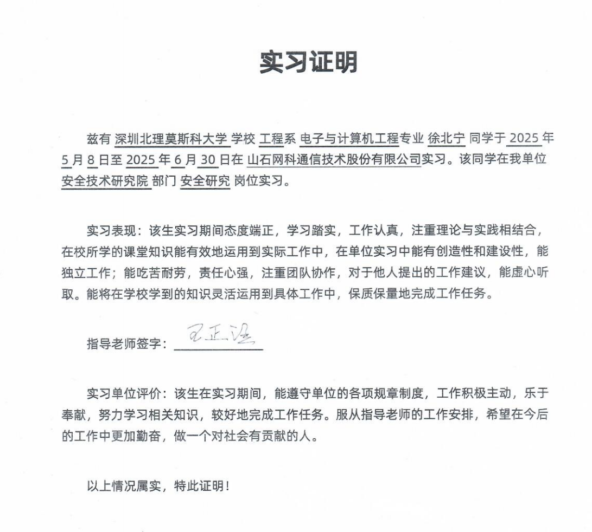

Latest News
- 2025.09.01: TECP: Token-Entropy Conformal Prediction for LLMs was accepted by Mathematics.
- 2025.09.01: TECP: Token-Entropy Conformal Prediction for LLMs was released on arXiv.
- 2025.08.07: One remote code execution vulnerability was collected by the CNVD Vulnerability Database.
- 2025.07.01: I completed my internship as an IoT Security Engineer at Hillstone Networks Co., Ltd.
- 2025.06.27: One remote code execution vulnerability was collected by CNNVD.
Biography
I am an undergraduate student at Shenzhen MSU-BIT University, majoring in Electronic and Computer Engineering. I also serve as the president of the university's Computer Association.
My research interests focus on information security, trustworthy artificial intelligence, multimodal large language models, natural language processing, embodied intelligence, and uncertainty analysis.
I have worked on binary vulnerability exploitation, IoT security, reverse engineering, privacy risks in document understanding models, and uncertainty estimation for large language models.
Research Interests
- Trustworthy and privacy-preserving multimodal large language models
- Document understanding, key information extraction, and privacy leakage analysis
- Uncertainty estimation and conformal prediction for large language models
- Embodied intelligence and navigation world models
- Binary security, IoT security, reverse engineering, and vulnerability exploitation
Selected Publications
Education
- Shenzhen MSU-BIT University, B.Eng. in Electronic and Computer Engineering, 2023-2027.
Awards
- Bronze Medal, 2024 CCPC Guangzhou Invitational Contest.
- CNVD Vulnerability Certificate: CNVD-2025-14134.
- CNVD Vulnerability Certificate: CNVD-2025-13986.
- CNVD Vulnerability Certificate: CNVD-2025-16003.
- CNVD Vulnerability Certificate: CNVD-2025-13939.
- CNNVD Vulnerability Certificate: CNNVD-2025-99097845.
Security and Vulnerability Reports


SQL Injection Vulnerability in Sourcecodester Sentiment Based Movie Success Rating Prediction System
A SQL injection vulnerability was discovered and reported.

Experience
- Hillstone Networks Co., Ltd., IoT Security Engineer Intern, May 2025 to July 2025.
- Key contributions include CNVD certificates, CNNVD certificates, vulnerability technology tracking articles, and product vulnerability reports.
- President of the Computer Association, Shenzhen MSU-BIT University.

2024 CCPC Guangzhou Invitational Contest
Awarded a bronze medal in the 2024 CCPC Guangzhou Invitational Contest.

Hillstone Networks Co., Ltd. Internship Experience
The internship focused on IoT device vulnerability research, CNVD and CNNVD submissions, and vulnerability technology tracking.